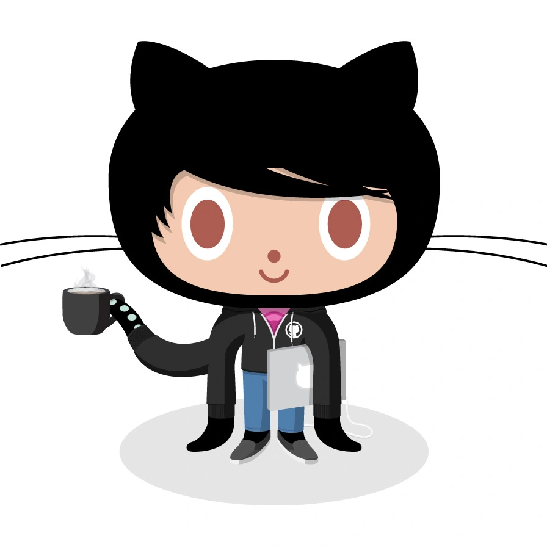

GitHub

GitHub — крупнейший веб-сервис для хостинга IT-проектов и их совместной разработки.
Веб-сервис основан на системе контроля версий Git и разработан на Ruby on Rails и Erlang компанией GitHub, Inc (ранее Logical Awesome).
Сервис бесплатен для проектов с открытым исходным кодом и (с 2019 года) небольших частных проектов, предоставляя им все возможности (включая SSL), а для крупных корпоративных проектов предлагаются различные платные тарифные планы.
Слоган сервиса — «Social Coding» — на русский можно перевести как «Пишем код вместе». На футболках же печатают совсем другую фразу: «Fork you!» («Ветвить тебя!»).
С одной стороны, она созвучна с англоязычным ругательством и намекает на неформальную атмосферу. С другой, эти слова напоминают, что создавать новые форки с Git можно легко и безболезненно — традиционно, к созданию веток разработчики проектов с открытым исходным кодом относятся негативно — а также созвучна названию одной из возможностей GitHub — очереди форков.
Талисманом GitHub выбран осьмикот (англ. octocat), который, вопреки распространённому заблуждению, не имеет отношения к короткометражке «Octocat Adventure», а просто был найден Томом Престон-Вернером на сервисе iStock.
- Возможности
- Популярность
- Примечания
- Ссылки
Список
Список
Список
Это контейнер,внутри которого находится термин и его описание
Выделяет текст как цитату HTML
Представляет фрагмент программного кода
выводит текст без форматирования, с сохранением пробелов и переносов текста
https://amubinov.github.io